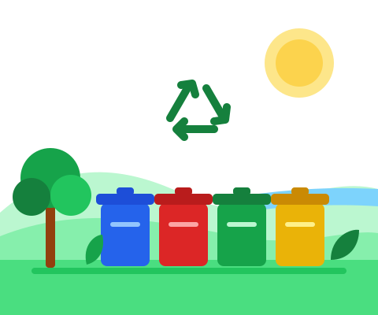

1
Separe
Divida o material por tipo: recicláveis, vidro, eletrônicos e óleo.
Encontre o ecoponto mais perto de você para entregar recicláveis, vidro, eletrônicos e óleo de cozinha. Separar o lixo protege nossas praias e lagoas.

Leva menos de um minuto e faz diferença para a cidade inteira.
Divida o material por tipo: recicláveis, vidro, eletrônicos e óleo.
Use o filtro abaixo para ver os pontos de coleta de cada material.
Confira o horário e abra a localização direto no Google Maps.
Selecione o tipo de resíduo para filtrar os pontos.
Veja o guia de cores da coleta seletiva e o que pode ou não ser reciclado.